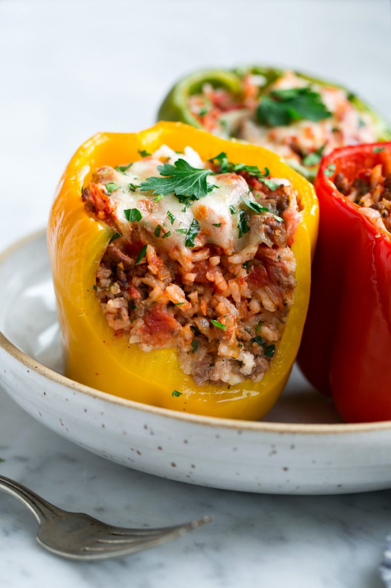

Stuffed Peppers

Description
Here, I’ve given the classic recipe a little update by quickly tenderizing the beef before cooking and seasoning it with Southwestern spices, which complement the sweetness of the bell peppers perfectly. That said, the recipe is endlessly versatile; you can change up the meat, spices, grain, or cheese to give the dish a whole new spin. This version goes nicely with cornbread.
Ingredients
Yellow Peppers
Cheese
Red Peppers
Steps
- Mix remaining tomato sauce and Italian seasoning in a bowl, and pour over the stuffed peppers.
- Bake in the preheated oven, basting with sauce every 15 minutes, until peppers are tender, about 1 hour.
- Hollow out bell peppers by removing and discarding the tops, seeds, and membranes. Slice the bottoms of the peppers if necessary to make sure they stand up straight.